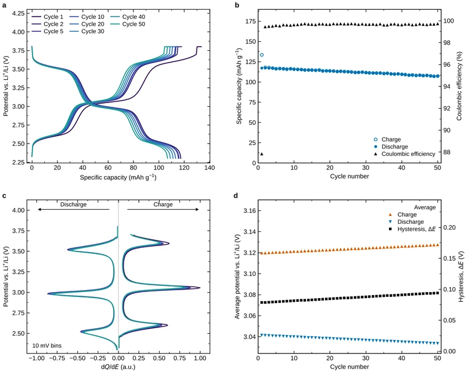
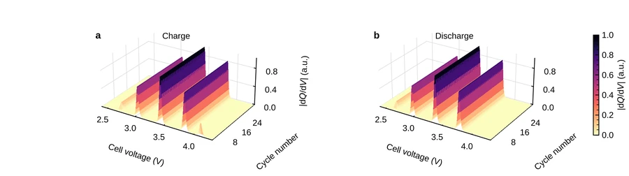

Free desktop app for battery cycling data
Cyclara
Every cycle, clearly.
Open a cycling file from EC-Lab, Arbin, Maccor, Neware, BaSyTec, Novonix, PEC or Landt. Cyclara finds every charge and discharge, asks you only what the file cannot say, and returns capacities, Coulombic efficiencies, dQ/dE peaks and figures at journal size, with every number also written out as a table.
Version 0.8.0, released 20 October 2026, for Windows 10 or 11 and macOS 14 or later. Free and open source under GPL-3.0; it carries its own Python, works offline and never changes your files. Release notes and checksums, source code.
- Cycles
- 1–50
- First discharge
- 117.3 mAh g−1
- Retention at cycle 50
- 91.1 %
- Mean efficiency, cycles 2–50
- 99.65 %
A look inside
The app's own screens, on its demonstration files. Click a picture to see it full size.
Four views of one cell, linked.
Potential against capacity, capacity and efficiency by cycle, dQ/dE, and the average potentials. The cycle you focus appears in all four; the strip underneath picks the cycles the figures will export.
Undo any answer with Ctrl+Z; Ctrl+K finds any action by name. Light and dark themes, and it fits a 14-inch laptop at 150 % scaling.
Nothing is assumed.
Until you answer, the window shows only what was recorded. Each question shows what the file suggests, as evidence rather than a decision, and what the answer will unlock. A value that needs an unanswered question is shown as withheld, with the reason.
Every cycle's dQ/dE at once.
A colour map of differential capacity against potential and cycle number. A plateau that fades, drifts or appears shows up as a changing stripe, which is hard to see in fifty overlaid curves.
Exported as fig6_dqde_map and fig7_dqde_surface, the same data as a colour map and as 3D surfaces.
Several plateaus, described, not labelled.
For each peak of the differential capacity: the capacity under it, its partner in the opposite branch of the same cycle (within 200 mV) or the status unpaired, and the cycles in which it is seen, such as first cycle only or appears from cycle 3. Whether a process is reversible stays your judgement.
This screen uses a second synthetic cell, a full cell built with plateaus known in advance, so the axis is the cell voltage and the derivative dQ/dV. The plateau analysis has not yet been tried on a real material with several plateaus.
Figures at the journal's own size.
Nature or Elsevier widths, type from 5 to 7 pt, panel letters at 8 pt. After drawing, each figure is checked: size, type including sub- and superscripts, text inside the canvas, legends clear of every kind of data, every point inside its axes, line weights and contrast.
Saved as vector PDF and SVG with editable text, and as 600 dpi PNG.
A cycler it has never seen.
A file no import profile recognises opens this page: the first rows, the proposed column roles and units, the three conventions no file states about itself, and a check that reads the whole file and compares the instrument's own capacity counter with the integral of the current. Confirm once, and that instrument is remembered by its header.
The column names in this picture are invented.
The method, inside the app.
Help, How the numbers are calculated: twelve topics, each in plain words and then in full (equation, units, sign convention, what the file must contain, when the value is not produced), filled in with the open file's own settings. A methods paragraph for your manuscript is one click away.
The texts are tested against the code, so a threshold described is the threshold used.
What you take away
Export writes everything into a new folder and never overwrites. A typical folder holds the following.
- fig1 … fig7, fig_summary
- Figures: potential against capacity, capacity and efficiency, dQ/dE, average potentials, the whole test against time, the dQ/dE map and surfaces, and a four-panel summary. PDF, SVG and PNG.
- summary.json
- The headline numbers: first-cycle capacities and efficiency, retention, the cycle at 80 %, fade per cycle, mean efficiency, average potential and hysteresis.
- cycles.csv
- One row per cycle: capacities in mAh and mAh g−1, Coulombic efficiency, retention, Δx, average and mid-capacity potentials, energies, energy efficiency, C-rates.
- branches.csv
- One row per charge or discharge, split into constant-current and constant-voltage parts, each checked against the instrument's own counter.
- rests.csv
- Every rest: duration, potential at its start and end, relaxation.
- curves_*.csv, dqde_*.csv
- Full-resolution curves, differential capacity on a stated voltage grid, every peak with its partner, and the cycle-by-cycle map.
- metadata.json
- Everything the file's header declares, including the programmed step table.
- settings.json
- The file's SHA-256, the columns used, every convention and choice, the equations, the figure checks, a methods paragraph and the citation.
- origin/
- The same tables laid out for Origin, and a script that builds an editable .opju on a PC with Origin 2021 or later.


Why trust the numbers
Each claim with the evidence behind it. The full method is in the cycling method specification.
- It does not guess.
- A file cannot say which current direction charges the cell, whether a cycle starts with a charge or a discharge, what its potential column measures, or how much active material was in the electrode. Cyclara asks for them (the cycle order only when a file starts with a discharge), shows what the file suggests, and withholds any value that depends on an unanswered question, saying why.
- It agrees with the instrument.
- On a 110-cycle lithium half-cell, Coulombic efficiency matches EC-Lab's own column to 4 × 10−6 % and discharge capacity to 6 × 10−9 mAh, from the binary .mpr and from its text export alike. Every branch is checked against the instrument's charge counter, and a time reset or gap is never integrated across.
- It is honest about other cyclers.
- Sixteen import profiles, each written from a real export that was read and checked, with that file and what it showed recorded in the profile. Any other export is learned from one file, asking only the conventions no file states. Nothing is claimed for a dialect nobody has checked.
- It describes plateaus without labelling them.
- Each dQ/dE peak gets the capacity under it, a partner in the opposite branch or the status unpaired, and the cycles in which it is seen. The average potential of a branch stays energy over charge, which with several plateaus is their capacity-weighted mean.
- The method travels with the result.
- settings.json records the file's SHA-256, the columns used, each choice and the equations. The app writes a methods paragraph and the citation of the exact version, so someone else can repeat the analysis.
- Large files open quickly.
- A million-row EC-Lab export opens in about 3 s. Other cyclers' exports are read in blocks, with progress shown, up to 2 GB.
- It is tested, and so are its releases.
- More than 900 automated tests, from exact arithmetic on synthetic cells to real instrument files. Each release on GitHub is immutable: its files cannot be swapped, each has a published SHA-256, and GitHub signs a record of what was released.
- It stays free.
- Open source under GPL-3.0. No account, no internet after installation, and your measurement files are read, never changed.
Cyclers it reads
Recognised from the file itself. What was checked for each dialect, and on which real file, is in the compatibility matrix.
| Cycler | Files | Checked on |
|---|---|---|
| BioLogic EC-Lab, BT-Lab | .mpr and .mpt | EC-Lab's own counters; public files and a 110-cycle cell |
| Arbin | MITS Pro CSV and Excel exports; .res tables saved as CSV | real exports: three dialects in full, a fourth by its columns |
| Maccor | text exports | real exports: three dialects in full; one more on inspected files, one recognised only |
| Neware | Excel and flat CSV exports | real exports, both dialects |
| BaSyTec | result files | a real export (a charge only) |
| Novonix | UHPC CSV | a real export (one charge step) |
| PEC | CSV | a real export; a second dialect recognised |
| Landt, LANHE | Excel exports | a real export |
| Any other | a text or spreadsheet export | learned from one file on the import page |
Instrument binaries other than .mpr (Arbin .res, Neware .nda and .ndax) are not read: export them to text or Excel from the instrument's software first.
Install
Each download carries its own Python and every package, so nothing else needs installing.
Windows
Windows 10 (version 1903 or later) or 11, 64-bit.
Cyclara-0.8.0-Setup.exe- Run the installer and click Next, Install, Finish. It installs for you alone, without an administrator password, and replaces 0.7.0 if you have it.
- The first time, Windows may say "Windows protected your PC", because the installer has no paid signature. Click More info, then Run anyway.
- Open Cyclara from the desktop or the Start menu, and try the demonstration file from its home page.
macOS
macOS 14 Sonoma or later. Apple menu, About This Mac shows which chip you have.
Apple silicon (M1 to M4)Intel- Unzip the download (Safari does it for you) and drag Cyclara.app to Applications.
- The first time, macOS says it cannot verify the app. Click Done, open System Settings, Privacy & Security, and click Open Anyway. On macOS 14, right-click the app and choose Open instead.
- Open Cyclara again; from then on it opens normally.
Handout (PDF, 15 pages)Every step with pictures, and a page on reading several plateaus.
Check what you downloaded
Download only from this page or the release page. If someone sends you a file another way, compare its SHA-256 with this list, which is also attached to the release as SHA256SUMS.txt.
7182922082ba701e517987f18c7a285464a54b4e2a503788d38d8e7ca43d2070 Cyclara-0.8.0-Setup.exe 20ab5b3d96153f5b10118e2e5ffccf3776a85759180b8f97f705f616fc528fb3 Cyclara-0.8.0-macOS-AppleSilicon.zip fc4ad59cb0ae7da111e5d424677eff7c7cdd8c537837c555c6767b8d74d54dd1 Cyclara-0.8.0-macOS-Intel.zip 12e639bab09db54edfe321e7c6cb5318c9e1c3bd65731bf2e52d3983389d5d18 Cyclara_handout_v0.8.0.pdf
- Windows, PowerShell:
Get-FileHash .\Cyclara-0.8.0-Setup.exe - macOS, Terminal:
shasum -a 256 ~/Downloads/Cyclara-0.8.0-macOS-AppleSilicon.zip - With the GitHub CLI, against GitHub's signed record of the release:
gh release verify-asset v0.8.0 Cyclara-0.8.0-Setup.exe -R asajeevan/electrochem-toolkit
Cite it
If Cyclara contributed to a publication, cite the version you used. The app gives the same text under Help, Cite Cyclara.
Shyma Sajeevan, A. (2026). Cyclara: traceable analysis of battery cycling data (Version 0.8.0) [Computer software]. https://github.com/asajeevan/electrochem-toolkit
@software{cyclara_0_8_0,
author = {{Shyma Sajeevan}, Aswadh},
title = {{Cyclara: traceable analysis of battery cycling data}},
version = {0.8.0},
year = {2026},
url = {https://github.com/asajeevan/electrochem-toolkit},
license = {GPL-3.0-or-later},
note = {Free software under the GNU General Public License, version 3 or later}
}What it does not do yet
- Cyclic voltammetry, impedance, conductivity and batch processing across cells are not in the app yet. They are the next work.
- The installers have been tested under Wine and by automated checks, not yet by a user on a physical Windows PC or a Mac. A report from your first installation is the most useful thing you can send.
- The installers are not code-signed, hence the one-time warnings above.
- The plateau analysis is verified on a synthetic cell whose answers are known by construction, not yet on a real material with several plateaus.